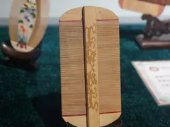
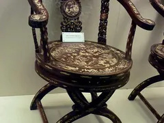

非遗图鉴 / 丹青雕琢
07
非遗图鉴 · 传统美术
丹青雕琢
传统美术 · 139 项、417 子项 · 第 2 / 3 页（Ⅶ-61 至 Ⅶ-120）
每一条只列名录上的事实：编号、名称、申报地区或单位、公布年份和批次。详情看中国非物质文化遗产网的官方页。在名录检索里查这一门类 →
- Ⅶ-61
葫芦雕刻
- 葫芦雕刻（东昌葫芦雕刻）山东省聊城市2008 第二批 · 新增项目官方页 →
- Ⅶ-62
- Ⅶ-63
- Ⅶ-64
- Ⅶ-65
- Ⅶ-66
- Ⅶ-67
龙档
- 龙档（乐清龙档）浙江省乐清市2008 第二批 · 新增项目官方页 →
- Ⅶ-68
常州梳篦
- 江苏省常州市2008 第二批 · 新增项目官方页 →

常州梳篦厂所产黄杨篦箕，材质为小叶黄杨、竹子图：Cat's diary (猫猫的日记本) / CC BY-SA 4.0 / 维基共享资源。本站已缩放裁切，按 CC BY-SA 4.0 同样许可共享。 - Ⅶ-69
- Ⅶ-70
- Ⅶ-71
- Ⅶ-72
湟中堆绣
- 青海省湟中县2008 第二批 · 新增项目官方页 →
- Ⅶ-73
瓯绣
- 浙江省温州市2008 第二批 · 新增项目官方页 →
- Ⅶ-74
汴绣
- 河南省开封市2008 第二批 · 新增项目官方页 →
- Ⅶ-75
汉绣
- 湖北省武汉市江汉区2008 第二批 · 新增项目官方页 →
- Ⅶ-76
羌族刺绣
- 四川省汶川县2008 第二批 · 新增项目官方页 →
- Ⅶ-77
- Ⅶ-78
彝族（撒尼）刺绣
- 云南省石林彝族自治县2008 第二批 · 新增项目官方页 →
- Ⅶ-79
维吾尔族刺绣
- 新疆维吾尔自治区哈密地区2008 第二批 · 新增项目官方页 →
- Ⅶ-80
- Ⅶ-81
- Ⅶ-82
柯尔克孜族刺绣
- 新疆维吾尔自治区温宿县2008 第二批 · 新增项目官方页 →
- Ⅶ-83
哈萨克毡绣和布绣
- 新疆生产建设兵团农六师2008 第二批 · 新增项目官方页 →
- Ⅶ-84
- Ⅶ-85
瓯塑
- 浙江省温州市2008 第二批 · 新增项目官方页 →
- Ⅶ-86
砖塑
- 砖塑（鄄城砖塑）山东省鄄城县2008 第二批 · 新增项目官方页 →
- Ⅶ-87
灰塑
- 广东省广州市2008 第二批 · 新增项目官方页 →
- Ⅶ-88
- Ⅶ-89
瓷板画
- 江西省南昌市2008 第二批 · 新增项目官方页 →
- Ⅶ-90
软木画
- 福建省福州市2008 第二批 · 新增项目官方页 →
- Ⅶ-91
镶嵌

宁波传统工艺——骨木镶嵌图：Siyuwj / CC BY-SA 3.0 / 维基共享资源。本站已缩放裁切，按 CC BY-SA 3.0 同样许可共享。 - Ⅶ-92
新会葵艺
- 广东省江门市新会区2008 第二批 · 新增项目官方页 →
- Ⅶ-93
传统插花
- 北京林业大学2008 第二批 · 新增项目官方页 →
- Ⅶ-94
- Ⅶ-95
布老虎
- 布老虎（黎侯虎）山西省黎城县2008 第二批 · 新增项目官方页 →
- Ⅶ-96
- Ⅶ-97
棕编
- 棕编（新繁棕编）四川省成都市新都区2011 第三批 · 新增项目官方页 →
- Ⅶ-98
苗画
- 湖南省保靖县2011 第三批 · 新增项目官方页 →
- Ⅶ-99
嘉兴灶头画
- 浙江省嘉兴市2011 第三批 · 新增项目官方页 →
- Ⅶ-100
永春纸织画
- 福建省永春县2011 第三批 · 新增项目官方页 →
- Ⅶ-101
平遥纱阁戏人
- 山西省平遥县2011 第三批 · 新增项目官方页 →
- Ⅶ-102
清徐彩门楼
- 山西省清徐县2011 第三批 · 新增项目官方页 →
- Ⅶ-103
上海绒绣
- 上海市浦东新区2011 第三批 · 新增项目官方页 →
- Ⅶ-104
宁波金银彩绣
- 浙江省宁波市鄞州区2011 第三批 · 新增项目官方页 →
- Ⅶ-105
瑶族刺绣
- 广东省乳源瑶族自治县2011 第三批 · 新增项目官方页 →
- Ⅶ-106
藏族编织、挑花刺绣工艺
- 四川省阿坝藏族羌族自治州2011 第三批 · 新增项目官方页 →
- Ⅶ-107
侗族刺绣
- 贵州省锦屏县2011 第三批 · 新增项目官方页 →
- Ⅶ-108
锡伯族刺绣
- 新疆维吾尔自治区察布查尔锡伯自治县2011 第三批 · 新增项目官方页 →
- Ⅶ-109
宁波泥金彩漆
- 浙江省宁海县2011 第三批 · 新增项目官方页 →
- Ⅶ-110
- Ⅶ-111
布糊画
- 河北省丰宁满族自治县2014 第四批 · 新增项目官方页 →
- Ⅶ-112
- Ⅶ-113
水陆画
- 河北省广平县2014 第四批 · 新增项目官方页 →
- Ⅶ-114
毕摩绘画
- 四川省美姑县2014 第四批 · 新增项目官方页 →
- Ⅶ-115
彩砂坛城绘制
- 西藏自治区日喀则市2014 第四批 · 新增项目官方页 →
- Ⅶ-116
琥珀雕刻
- 辽宁省抚顺市2014 第四批 · 新增项目官方页 →
- Ⅶ-117
传统玩具
- 传统玩具（郯城木旋玩具）山东省郯城县2014 第四批 · 新增项目官方页 →
- Ⅶ-118
蒙古文书法
- 内蒙古自治区2014 第四批 · 新增项目官方页 →
- Ⅶ-119
满文、锡伯文书法
- 新疆维吾尔自治区乌鲁木齐市2014 第四批 · 新增项目官方页 →
- Ⅶ-120